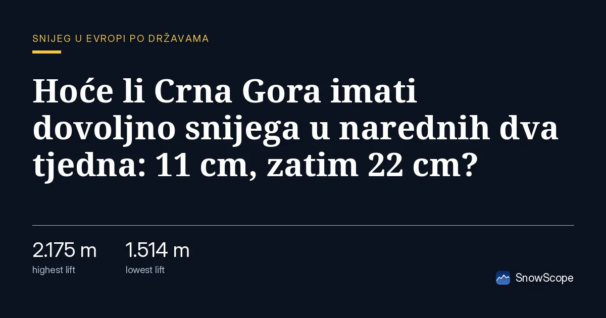

Hoće li Crna Gora imati dovoljno snijega u narednih dva tjedna: 11 cm, zatim 22 cm?
Naš model predviđa 11 cm snijega u narednoj sedmici i 22 cm u sedmici od 24. do 30. novembra. Većina ovog snijega padaće na većim nadmorskim visinama, iznad 2100 metara.
Pogledajte prognozu snijega za Ski centar Savin kuk u aplikaciji SnowScopeVisina snijega, upozorenja i 3D karta, besplatno.
Dva tjedna nagomilavanja pred nama
Perspektiva za narednih dva tjedna pokazuje značajnu promjenu. Ove sedmice, naš model procjenjuje vrhunac od 11 centimetara novog snijega širom zemlje. Aktivniji period počinje 20. novembra, kada naš model signalizira početak snježnih situacija. Najveći pad u jednom danu modeliran je za 23. novembar, kada se očekuje oko 9 centimetara. Druga sedmica—od 24. do 30. novembra—donosi veću akumulaciju: 22 centimetra modelirana kao maksimum za taj period.
Ovo je značajna promjena od danas. U posljednjih 72 sata, samo 4 centimetra snijega je nagomilano širom Crne Gore (zabilježeni maksimum). Voda pohranjena u ovom snijegu od dva tjedna će se uglavnom koncentrirati iznad 2100 metara, gdje se trenutno nalazi linija snijega.
| Ski-centar | Visina snijega | Novi snijeg, 72 h | Naredni dani | Vrh |
|---|---|---|---|---|
| Ski centar Savin kuk | 13 cm | 15 cm | 4 cm | 2.175 m |
| Kolašin 1600 | 1 cm | 3 cm | 0 cm | 2.028 m |

Dani 1-3: pauza prije dolaska snijega
Neposredna perspektiva je mirna. Do 19. novembra, naš model ne pokazuje nikakav novi snijeg koji se očekuje širom Crne Gore. Naredna tri dana će ostati suhova. Snježno pokrivanje je na najmanjoj razini: danas samo 1 posto zemlje je bijelo, padnulo sa 130 kvadratnih kilometara jučer na 80 kvadratnih kilometara sada. Ovaj pad je prirodan—topliji vazduh utječe na postojeći tanki snijeg na nižim nadmorskim visinama.
Snijeg će se vratiti od 20. novembra nadalje. Suvi period pred nama je važan za procjenu stabilnosti ako planirate raditi na većim nadmorskim visinama na postojećem snijegu.
Smanjivanje snježnog pokrivača i oporavak pred nama
Prošla sedmica je bila teška za snježni pokrivač. Prije sedam dana, 390 kvadratnih kilometara Crne Gore je bilo pokriveno snijegom. Danas je ta cifra 80 kvadratnih kilometara—gubitak od 310 kvadratnih kilometara u jednoj sedmici. Ovo brzo smanjivanje je tipično za rani novembar, kada solarna radijacija i temperature vazduha mogu i dalje otopiti ono što je palo u jesenskim olujama. Voda od tog izgubljenog snijega je otekla na niže nadmorske visine i tokove.
Oporavak dolazi naredne sedmice. Počevši od 20. novembra, model signalizira prelazak sa otapanja na akumulaciju. Vrhunac od 22 centimetra u drugoj sedmici sugeriše značajno punjenje planinskog vodenog skladišta nakon ovog sadašnjeg suvog perioda.
Gdje najviše planine skupljaju snijeg
Prokletije planine na sjeveru su bile fokus nedavnih padavina, sa 29 centimetara zabilježenih u posljednjih 72 sata. Durmitor je akumulirao 17 centimetara u istom periodu, dok je Bjelasica primila 5 centimetara. Ove brojke pokazuju da se najviši planinski masivi već odazivaju na atmosfersku vlagu.
Ski centar Savin kuk, najviši skijarski centar zemlje na 2175 metara, ima 13 centimetara na terenu danas i primio je 15 centimetara u posljednjih 72 sata. Ovo je najbolja izmjerena dubina snijega trenutno u Crnoj Gori. Kolašin 1600, na 2028 metara, ima samo 1 centimetar dubine, što pokazuje kako je snijeg tanak blizu trenutne linije snijega.
Visinske zone i linija snijega
Snijeg je koncentrisan u uzanom vertikalnom sloju. Između 1500 i 2000 metara nadmorske visine, samo 1 posto terena je pokriveno snijegom. Važan sloj je između 2000 i 2500 metara, gdje je 49 posto površine pokriveno snijegom i srednja dubina je 2 centimetra. Linija snijega na 2100 metara odvaja zonu otapanja ispod od zone akumulacije iznad.
Za narednih dva tjedna, kako model pokazuje do 22 centimetra novog snijega, ta akumulacija će se razvijati uglavnom iznad 2000 metara. Snijeg u ranoj sezoni na većoj nadmorskoj visini može ostati tanak i neujednak. Do 30. novembra, očekujemo da se dubina poveća, ali stijene i golo tlo mogu i dalje biti vidljive kroz pokrivač na strmijim nagibima okrenutim prema jugu.
Savjeti za skijaše
- Iznad 2100 metara je gdje će se snijeg skupljati u narednih dva tjedna; niže nadmorske visine će nastaviti sa graničnim uslovima.
- Najsnježniji dan u prognozi je 23. novembar, kada se modelira 9 centimetara novog snijega; planirajte izlete na većoj nadmorskoj visini od 23. novembra nadalje.
- Ski centar Savin kuk je najbolja trenutna opcija sa 13 centimetara dubine i 2175 metara nadmorske visine; hvatit će većinu dolazećeg snijega.
- Ako pođete van piste, provjerite najnoviji službeni lavinski bilten; snijeg u ranoj sezoni može biti nestabilan kada nova akumulacija leži na tankom postojećem pokrivaču.
- Snijeg će biti tanak u prvim sedmicama sezone; stijene i golo tlo mogu biti blizu površine, posebno ispod 2000 metara.
About these numbers
Resort snow depths are the deepest snow on the resort's upper slopes from the SnowScope snow model (about 1 km, run of 16. novembra); they are estimates for an area, not a measurement at one point. Station values are measurements on the date shown. Forecasts can change. Always read the official avalanche bulletin before going off-piste.
Cite this report
For research, teaching or the press: the numbers and charts are free to reuse under CC BY 4.0 with this citation.
SnowScope (2026), Hoće li Crna Gora imati dovoljno snijega u narednih dva tjedna: 11 cm, zatim 22 cm?, https://snowscope.app/blog/cnr/2026/11/montenegro-snow-report-16-november-2026.html, accessed 2026-11-16
SnowScope (Atlas Labs). (2026, November 16). Hoće li Crna Gora imati dovoljno snijega u narednih dva tjedna: 11 cm, zatim 22 cm?. SnowScope snow reports. https://snowscope.app/blog/cnr/2026/11/montenegro-snow-report-16-november-2026.html
BibTeX
@misc{snowscope2026montenegrosnowreport16no,
author = {{SnowScope (Atlas Labs)}},
title = {Hoće li Crna Gora imati dovoljno snijega u narednih dva tjedna: 11 cm, zatim 22 cm?},
year = {2026},
month = nov,
howpublished = {\url{https://snowscope.app/blog/cnr/2026/11/montenegro-snow-report-16-november-2026.html}},
note = {Published 2026-11-16 20:42 UTC; accessed 2026-11-16}
}· CC BY 4.0 · Methods, data and tools →
Ski centar Savin kuk: snow and temperature by height, this winter vs last (tools) →
Follow Ski centar Savin kuk
Besplatno: poruka kada dolazi novi snijeg i prognoza svako jutro.